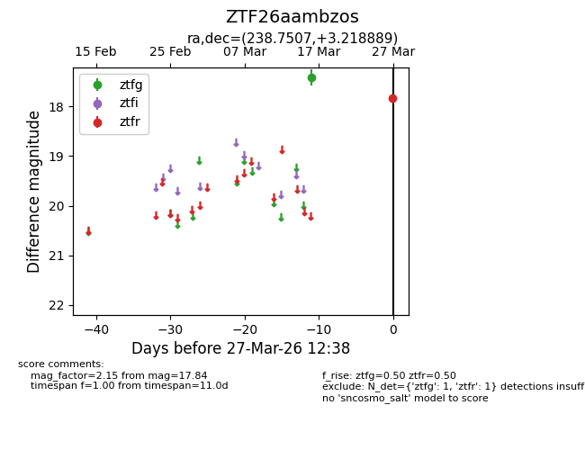
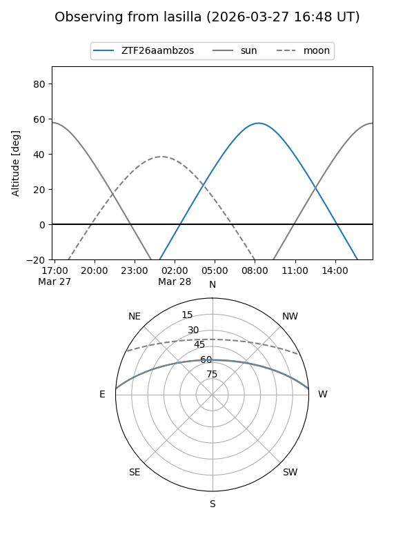
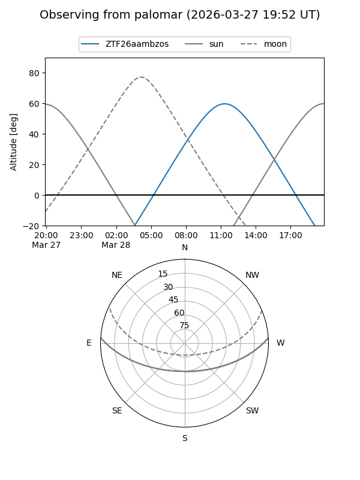

ZTF26aambzos
Target ZTF26aambzos at 2026-03-27 12:41
Aliases and brokers:
FINK: link
Lasair: link
ALeRCE: link
alt names
ZTF26aambzos (ztf,fink_ztf)
Coordinates:
equatorial (ra, dec) = 238.7507,+3.21889
equatorial (HMS+DMS) = 15:55:00.16,+03:13:08.00
galactic (l, b) = (12.5113,+40.09665)
Flags:
Photometry:
last ztfg=17.42, ztfr=17.84
1 ztfg, 1 ztfr detections
Lightcurve

Visibility


Additional plots